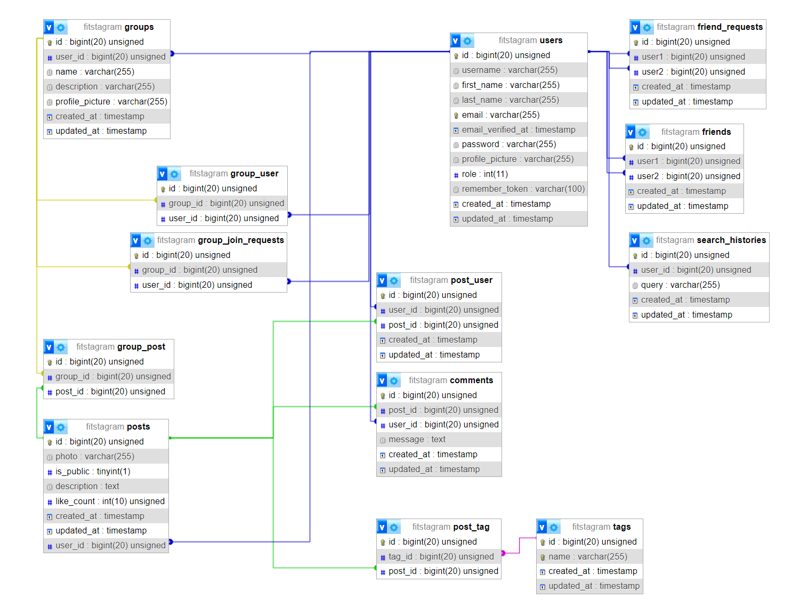

FITstagram
- Autoøi
- Matej Koscelník
xkosce01@stud.fit.vutbr.cz -
príspevky, komentáre, pridávanie príspevkov
- Filip Halèi¹ák
xhalci02@stud.fit.vutbr.cz -
vyhµadávanie skupín, u¾ívateµov a tagov
- Maro¹ Berdis
xberdi01@stud.fit.vutbr.cz -
správa a zobrazenie skupín a priateµov
- URL aplikace
- https://www.stud.fit.vutbr.cz/~xberdi01
U¾ivatelé systému pro testování
| Login | Heslo | Role |
|---|
| admin@example.com | admin | Administrátor |
| moderator@example.com | moderator | Moderátor |
| user@example.com | user | Registrovaný u¾ivateµ |
Video
Implementace
Aplikácia je vytvorená pomocou technologií Laravel, Vue.js a Inertia (rie¹i routing, "náhrada za API").
-
Prihlásenie a správu uètu sme prevzali z Laravel Breeze Starter Kit.
To je implementované v prieèinkoch app/Http/Controllers/Auth/, app/Http/Controllers/ProfileController.php a app/Http/Requests/
- app/Http/Controllers
- /Group
-
/GroupController.php
Správa skupín
-
/GroupJoinController.php
Správa èlenov skupiny, ¾iadosti o vstup
- /Post
-
/CommentController.php
Správa komentárov
-
/PostController.php
Správa príspevkov
- /SearchBar
-
/SearchBarController.php
Správa vyhµadavania
- /User
-
/FriendRequestController.php
Správa priateµstiev a ¾iadosti o ne.
-
/UserController.php
Správa pou¾ivateských rolí a mazanie úètu.
- app/Http/Services
-
/GroupManagmentService.php
Funkcie na správu skupín
-
/PostRetrievalService.php
Funkcie na ziskávanie príspevkov
-
/UserAuthenticationService.php
Funkcie k roliam
-
Front End aplikácie sa nachádza v prieèinku resources/
-
Inertia Routes sú definované v súbore routes/web.php, priradzujú metódy controlleru k ceste
-
Pre prácu s DB pou¾ívame ORM, ktorého modely sú v prieèinku app/Models/ a databáza sa tvorí z migrácií v prieèinku database/migrations/
-
Testovacie dáta (seeds) sú náhodne generované pomocou kódu v database/seeders/ a database/factories/
Databáze - MySQL

Instalace
- postup jednoduchej in¹talácie na server:
-
Rozbali» archív projektu do verejného prieèinku webového servera (napr. WWW/ alebo htdocs/)
-
V súbore .env definova» db connection udáje
-
V súbore vendor/laravel/framework/src/Illuminate/Foundation/resources/server.php zmeni» cestu k index.php na riadku 23 na "/../index.php" (kvôli kompatibilite so serverom Eva)
-
V prieèinku projektu spusti» príkazy:
-
composer install, ktorý stiahne vendor súbory
-
npm install, ktorý stiahne .js balíèky
-
php artisan storage:link, ktorý vytvorí symbolický odkaz na ulo¾isko obrázkov (prieèinok /public/storage/uploads/)
-
php artisan serve, ktorý spustí server
- softwarové po¾iadavky:
-
PHP version > 81
-
Nain¹talovaný Laravel v. 11.x, Composer, npm
- Inicializácia MySQL databázi:
-
Vytvori» prazdnú db, napr. cez phpmyadmin
-
V súbore .env definova» db connection udáje
-
V prieèinku projektu spusi» príkaz php artisan migrate:fresh --seed, ktorý z migrácií vytvorí tabuµky a vlo¾í seed dáta
Známé problémy
- Admin vie zmaza» vlastný úèet a zmeni» si rolu.
- Prida» príspevok do skupín je mo¾né iba pri jeho tvorbe. Av¹ak odstráni» ho zo skupiny sa dá kedykoµvek.
- Ak admin po¾iadá o vstup do skupiny, ¾iados» uvidí v zozname a¾ po refreshe stránky. Je to tak preto¾e, kvôli optimalizácií aktualizujeme iba niektoré dáta a to ¾e si admin po¾iada a sám potvrdí svoju ¾iados» nie je be¾ný use-case.